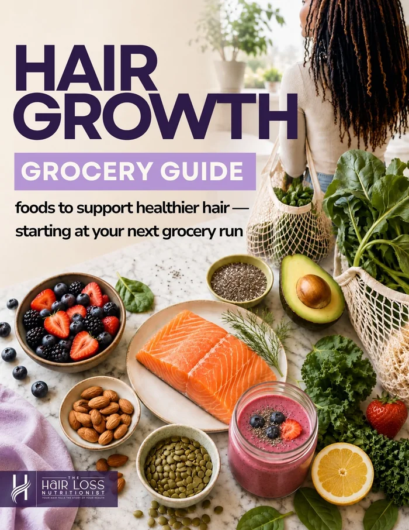

Hair Growth Grocery Guide
Stop guessing what to eat for hair growth.
Here's a beginner-friendly nutrition guide for women experiencing hair loss. Skip the conflicting advice and learn how to grocery shop with more confidence, clarity, and intention.
- Learn which nutrients support healthy hair
- Discover everyday foods that provide those nutrients
- Build balanced, hair-supportive meals without restrictive dieting
- Stop wasting money on random supplements and products
Instant digital download. Practical nutrition guidance from a Registered Dietitian.